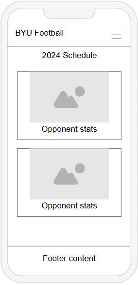
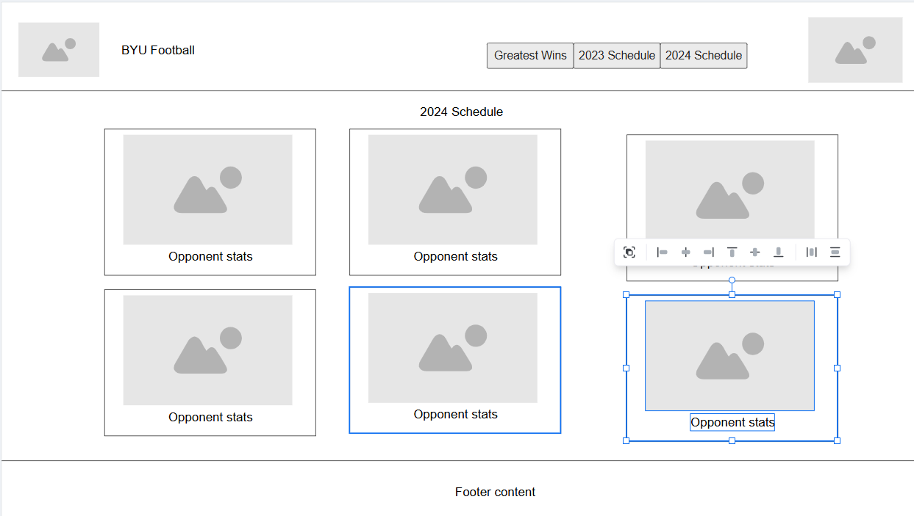

Site Name: BYU Football Fan Hub
Site Description: The website provides different statistics pertinent to BYU football
Scenario 1: Who does BYU play this next year?
Scenario 2: Who did BYU play Last year?
Scenario 3: how good are BYU's appoinents?
Color 1: #0047BA
Color 2: #FFFFF
I will use color 1 for the header and footer. I will use color 2 for the main page content
The font will be Lato
Wireframes

